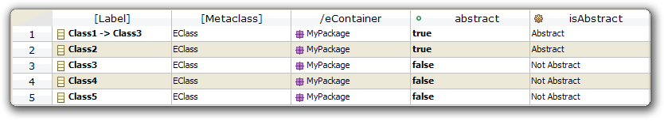
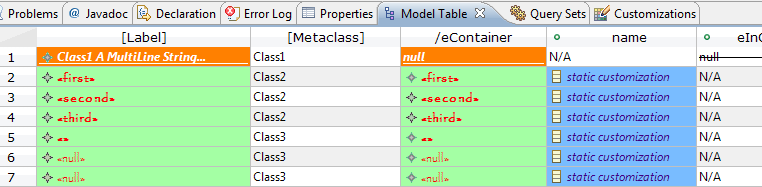

New and Noteworthy
0.1
EMF Facet 0.1 is the first release from EMF Facet, with the initial contribution coming from the MoDisco project.
Table Model Editor
There is a new table editor for models.

It supports the following functionalities:
- The table can be opened from any selection of model elements.
- The user can add and remove model elements from the table.
- The table can display the results of queries in additional columns.
- The user can edit values of the model elements attributes.
- The user can set unary features (through a cell editor or drag & drop).
- The user can set n-ary features with a dialog.
- The table can be used to delete model elements.
- The table provide a full support of undo/redo.
- An extension point allow to provide new cell editors for any EType.
- The table is automatically refreshed the model is modified.
- The user/integrator can declare types of tables, which can be constrained to a specific type of element.
- The use can copy a selection as text to paste it into a spreadsheet, text editor, etc.
- The cells and column headers can be customized through the generic EMF Facet customization mechanism inherited from MoDisco (with .uiCustom files): label, colors, icons, fonts, struckthrough, etc.
- The tables can be saved to a file and re-opened later.
- The tables can display Facet attributes and references in additional columns.
- Columns can be hidden/shown selectively with a dialog.

Generic EMF serialization mechanism
EMF Facet now defines an extension point and registry to specify serializers for specific types, through a generic serializable EDataType (see ISerializationService).
0.3
- FacetSet and Customization editor.
Copyright © 2012 Mia-Software.
All rights reserved. This program and the accompanying materials
are made available under the terms of the Eclipse Public License v1.0
which accompanies this distribution, and is available at
http://www.eclipse.org/legal/epl-v10.html.
Contibutors:
Grégoire Dupé - Bug 387470 -
EFacet
Custom Editors